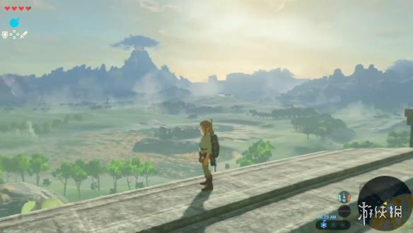

有许多小伙伴都会沉迷在塞尔达传说荒野之息的大世界中不可自拔，但是却不知道自己到底玩了多长时间，今天小编就为大家带玩家“boomwawa”分享的来塞尔达传说荒野之息总游戏时间查看方法，有需要的朋友们不妨来看看吧！
总游戏时间如何查看？
新版本更新后，地图上有“英雄之路”记录，你去过哪里，怎样瞬移，被打扒过多少次都历历在目。全个流程条最长记录200小时，你看长度就大约可以得知游戏总时间。
以上就是小编为大家带来的全部内容，希望可以帮助到大家。
